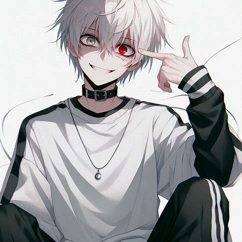

Kogen it's exterminator of third grade.
At first glance, Kogen may seem like an emotionless maniac. But in fact, he has feelings, but he remains a maniac.
Kogen is just smiling because.. why not? Kogen's palette is black and white, and he didn't always have a red eye.
His left eye turned red due to strong negative emotions and negative events associated with his first love, Seto.
The redder this eye, the more negativity in Kogen.
By the way, Kogen does not feel pain, has instant regeneration.
Also a personal race of puppets made from the flesh of different creatures, Kogen's flesh and his blood. Has poisonous flesh that distorts or vaporizes the physical body (But Kogen's). And a whole bunch of different abilities from the title of third-grade exterminator
Kogen have only one love: Seto. He belived that Someone much stronger then all exterminators kill him, because Kogen was lazybone and was exterminator of 56-th grade. And he can't belived that he can kill killer of demons.
Kogen young for exterminator, he only 736 years old